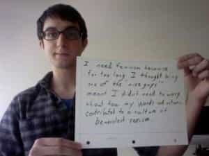

< < < Back
The Pursuit Of Truth, Goodness, And Beauty – Return Of Kings
Clive Staples Lewis (1898 – 1963) is best known for his Chronicles of Narnia series, but he was also one of the great Christian apologists of the early 20th century. His book The Abolition of Man began as a criticism of rationalist pedagogy but became a profound defense of the Natural Law (what Lewis called “the Tao”) and analysis of progressivism in its embryonic stage.
Lewis proved prophetic, as the enlightened educators of his day gave birth to the Social Justice Warriors of ours.
Beauty Is Objective
Lewis begins by analyzing a textbook written for elementary English students. The textbook’s authors said that when a man sees something beautiful and says, “This is sublime,” the man is merely making a statement about his own feelings and projecting them upon reality.
In contrast, consider St. Augustine’s definition of virtue: “the ordinate condition of the affections in which every object is accorded that degree of love which is appropriate to it.” Plato argued that young people must be trained to feel pleasure, liking, disgust, and hatred toward things that objectively were pleasurable, likeable, disgusting, and hateful.
All religions and the ancient philosophies believed that truth, goodness, and beauty were discovered and not manufactured by man. Emotional responses are not logical, but they can be reasonable or unreasonable as they conform to objective reality or not.
The poet Samuel Taylor Coleridge could agree with the man who called the waterfall sublime and disagree with the woman who called it pretty because the waterfall objectively merited veneration.

The Natural Law
The Tao varies in the details in different times and places, but there are commonalities that have endured everywhere: duty, honor, commitment, honesty, magnanimity, filial piety, and raising our children right. Even if we ourselves fail to live up to those standards, normal people recognize their existence and that their lack of virtue is a defect in themselves such as being color blind or tone deaf.
Lewis compared the old pedagogy to how birds teach their young how to fly. Boys were trained to conform themselves to a standard of manhood that existed outside of their base desires. Either they would succeed and fly, or they would fail and fall to the ground. Today, however, boys are treated like chickens on the farm: the farmer fattens them up and uses them for purposes the bird knows not what.
The Acid Of Progressivism
The beatings will continue until she’s hot
SJWs say that race, gender, standards of beauty, and other objective realities are nothing but social constructs. When we recoil in disgust at a fat woman, we are told that this is merely a result of the conditioning instilled by the old reactionary patriarchal order. If it’s only conditioning, it follows that with the proper conditioning we can overcome all of the oppressive shackles that bound our stupid benighted ancestors.
Lewis argues that the Tao is inescapable. If we were to press SJWs on why they do what they do, they will eventually concede it’s because they envision a world they believe is good for its own sake. Their vision is warped, twisted, and incoherent, but they still have a vision and bad men like us must be brought to heel if their vision is to be realized. As John Wayne would say, “That’ll be the day.”
If we wage a direct frontal assault upon the Tao – “Why? What good is it? Who says so?” – then we are sawing off the branch on which we are sitting. If reality is nothing but atoms and the void to be shaped by those with the will to do so, then it all comes down to storytelling and whoever has the most guns gets to decide what reality is.
The Abolition Of Manhood
The progressive may try to justify things like honesty, fidelity, and magnanimity on purely rational or biological or modern grounds. He will twist himself into pretzels to avoid conceding that virtues are grounded in objective value. Without trained emotions, however, the intellect is no match for the animal appetites. Crude sentimental appeals to God and country will keep the soldier going in battle far longer than the neatest syllogisms.
Reason rules the appetites through the spirited elements of man or, as Lewis puts it, the head rules the belly through the chest. The chest, or heart, is where emotions are organized by trained habits into stable sentiments. In the most famous passage of the book, he writes:
You can hardly open a periodical without coming across the statement that what our civilization needs is more ‘drive,’ or dynamism, or self-sacrifice, or ‘creativity.’ In a sort of ghastly simplicity we remove the organ and demand the function. We make men without chests and expect of them virtue and enterprise. We laugh at honor and are shocked to find traitors in our midst. We castrate and bid the geldings be fruitful.

This is the abolition of man. It won’t make sense to speak of our social conditioners as being good or bad men because they won’t be men at all. Having conquered nature through science, they will at last conquer human nature. In the void where human nature once existed will be only animal instinct and the nature our masters want us to have.
Liberal democracies do not employ the brutal methods of the communists and fascists (yet) but their goal is the creation of the glorious new man who will be properly malleable in the hands of his progressive rulers.
The Solution
For the wise men of old, Lewis writes, the problem was how to conform the soul to reality. Their solution was knowledge, virtue, and discipline. For the modern, the problem is how to make nature conform to man’s desires. The heyday of occultism and sorcery wasn’t the Dark Ages but the early Modern Age, between the 16th and 17th centuries. The scientist and the magician had different methods but the same goals.
Lewis was an Anglican Christian. In case my previous column didn’t make it clear, I am a Roman Catholic. For my fellow Christians and I, God is the source of the Natural Law. God is truth, goodness, and beauty.
You may not believe in God but I’m certain that you believe in those three things. All men, whether they know it or not, desire truth, goodness, and beauty. They are not merely words that describe our emotional states but objective realities by which we judge everything else.
Read More: Is The Pursuit of Truth A Mask For Negativity?


{kind=link}
{kind=link}